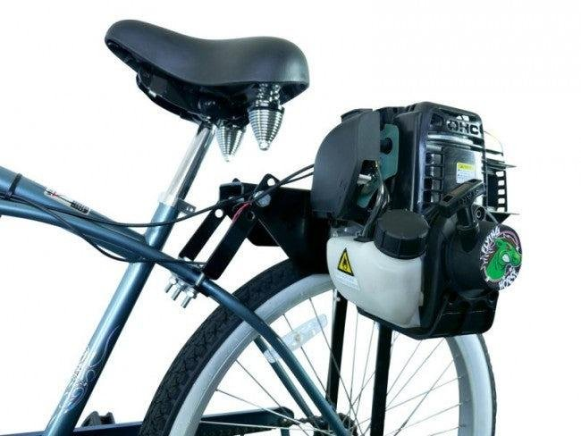
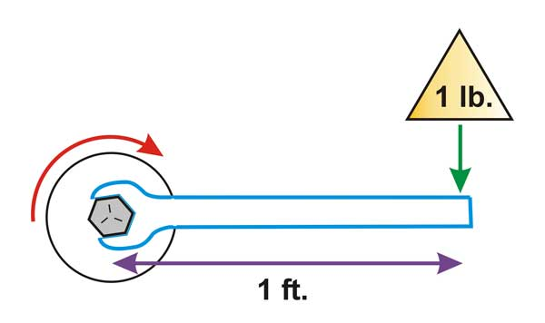

How toothed wheels pass motion along and let us trade speed for strength.
Describe what you think a gear is and what job it does inside a machine.
The teeth of multiple gears interlock, which lets them transform motion and force between rotating parts.

We often transfer motion between two wheels that are simply pressed together, using friction to do the work. These friction drives are simpler systems to build.
On this gas-powered bicycle, the engine spins a smooth roller that presses against the rear tire, and friction alone turns the wheel.
If friction drives are simpler to design and build than gears, why do we go to the effort to make gears?
A single gear can’t do much on its own. When you combine multiple gears so that each one turns the next, you have a gear train.
The driver gear provides the input power to the gear train. It is usually the gear connected to a motor.
A driven gear receives its power from the driver gear. It is where the output motion comes from.
The pitch is the distance between neighboring gear teeth, which sets the size of each tooth.
For one gear to drive another, their teeth need to mesh: each tooth on one gear has to slide into a gap on the other.
That only works if both gears have the same pitch. The gears can be different sizes, but their teeth must be the same size and spacing.
In a gear train, adjacent gears rotate in opposite directions. If the gold driver gear rotates clockwise, its teeth push the blue gear counter-clockwise. A third gear driven by the blue gear rotates clockwise again.
When two gears mesh, the larger gear always turns at a lower speed, measured in rotations per minute (RPM), than the smaller gear. This is true no matter which one is the driver and which one is driven.
You can figure out how much slower by comparing the number of teeth on each gear. That comparison is called the gear ratio.
Suppose the driven gear has 40 teeth and the driver gear has 10 teeth. Then the gear train has a 4:1 gear ratio.
A 4:1 ratio means the driver gear has to spin 4 times for the driven gear to rotate once.
A 10-tooth driver gear turns a 40-tooth driven gear, which is a 4:1 gear ratio. If the driver gear spins at 5 rpm, how fast does the driven gear rotate?
Work it out with a partner before we look at the solution.
The gear ratio also compares the speeds of the two gears, but notice that the speed fraction is flipped: the driver speed goes on top.
The gear ratio also determines how the rotational force changes from the driver gear to the driven gear. Rotational force is called torque.
Torque is the amount of force applied at a distance from the center of rotation. It is measured in newton-meters (N·m) or foot-pounds (ft-lbs).
For example, hanging a 1 lb weight on the end of a wrench that is 1 ft long applies 1 ft-lb of torque to the bolt.

Gears let engineers trade speed for strength, or strength for speed. The same gear ratio tells you how both the speed and the torque change from the driver to the driven gear.
When speed increases, torque decreases.
When torque increases, speed decreases.
A 10-tooth driver gear is driving a 30-tooth driven gear with a torque of 5 ft-lbs. What is the output torque?
Work it out with a partner before we look at the solution.
The driven gear turns 3 times slower than the driver, but it delivers 3 times the torque.
You need three gear sizes (small, medium, and large), a MechRail, shafts, collars, and masking tape.
Solve each problem on your worksheet. Show your work: write the formula you are using, substitute the numbers, and then solve.
A 20-tooth driver gear drives a 60-tooth driven gear.
A 12-tooth driver gear turns a 36-tooth driven gear with 4 ft-lbs of torque.
20-tooth driver, 60-tooth driven
12-tooth driver, 36-tooth driven, 4 ft-lbs
Use your three gears to create the highest output speed possible.
Count the input rotations and the output rotations, and record what you see.
They use teeth to prevent slippage.
Meshing gears must have the same pitch.
If the driver turns clockwise, the next gear turns counter-clockwise, and the one after that turns clockwise again.
Count the teeth: the ratio is driven teeth divided by driver teeth.
Larger ratios give more torque and less speed. Smaller ratios give less torque and more speed.
To finish up, complete Parts 5 and 6 of your worksheet.